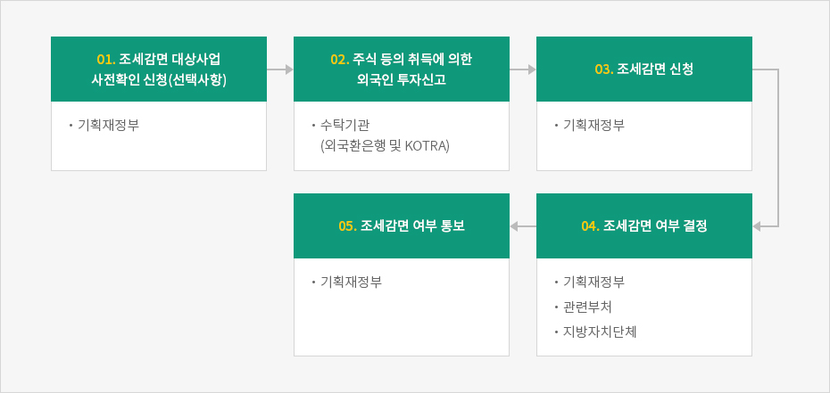
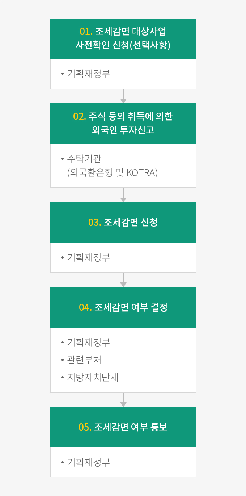

절차
- Home
- 인센티브
- 조세감면
- 절차
외국인투자기업이 조세감면을 받고자 할 경우 또는 내용이 변경되는 경우 반드시 기획재정부 장관(자유무역지역의 경우 자유무역관리권자)에게 조세감면신청을 하여야 한다.
※ 관련규정 : 「조세특례제한법」 제121조 의2 제⑥항
신청서 제출처는 기획재정부 대외경제총괄과 (044-215-7625)이며 외국투자가가 외국인투자신고와 조세감면신청을 동시에 하고자 하는 경우 외국환은행(수탁은행) 및 KOTRA에 외국인투자신고서와 함께 조세감면신청서를 제출할 수 있다.
※ 관련규정 : 「조세특례제한법 시행규칙」 제15조의 3 및 기획재정부고시 제2017-10호, 2017.4.4. 「 외국인투자에 대한 조세감면규정」제5조제②항
신청기한은 신규투자의 경우에는 사업개시일이 속하는 과세연도의 종료일 까지이며 조세감면결정을 받은 사업내용을 변경한 경우 해당 변경사유가 발생한 날부터 2년이 되는 날까지 변경 신청하여야 한다.
조세감면 신청절차



- 조세감면 대상사업 사전확인 신청(선택사항) - 기획재정부
- 주식 등의 취득에 의한 외국인 투자신고 - 수탁기관(외국환은행 및 KOTRA)
- 조세감면 신청 - 기획재정부
- 조세감면 여부 결정 - 기획재정부, 관련부처, 지방자치단체
- 조세감면 여부 통보 - 기획재정부

조세감면대상사업 사전확인
외국투자가가 투자결정에 참고하기 위하여 외국인투자신고 이전에 조세감면대상사업 여부 확인을 사전에 신청할 수 있다. 사전확인의 효력은 조세감면의 대상 기술 여부만을 확인하는 것이므로 투자신고 후 별도의 조세감면 신청을 하여야 한다.※ 관련규정 : 「조세특례제한법」 제121조의 2 제⑦항
조세감면의 결정 및 통보
기획재정부 장관은 조세감면신청 또는 조세감면내용의 변경신청에 대하여 조세감면 기준에 해당되는지에 대해 주무부 장관 및 지방자치 단체의 장과 협의하여 20일 이내에 감면 여부 또는 감면내용의 변경여부를 결정하고 이를 신청인, 국세청장, 관세청장, 지방자치단체장에게 통지 한다.
다만, 부득이한 경우 20일 범위 내에서 그 처리기간 연장이 가능하다.
비감면 사업으로 결정예고통지
기획재정부 장관은 조세감면신청을 받아 비감면대상사업으로 결정하려는 때에는 해당 신청일부터 20일 이내에 결정예고통지를 한다. 신청인은 그 통지를 받은 날부터 20일 이내에 소명자료를 첨부하여 통지내용의 적정성 여부에 대한 심사를 서면으로 요청할 수 있다. 기획재정부 장관은 요청을 받은 날부터 20일 이내에 감면여부 또는 감면내용의 변경여부를 결정하고 그 결과를 통지하여야 한다.※ 관련규정 : 「조세특례제한법」제121조의 2 제⑧항, 동법 시행령 제116조의 3 제①~⑥항